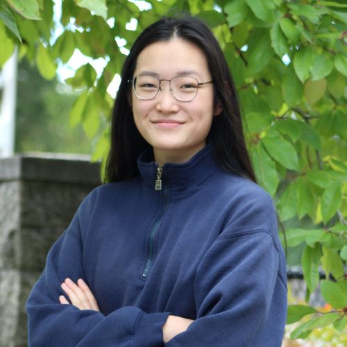

<h1 class="noslashes">Our Team</h1>
<!--
<div class="section" id="topbuttons">
  <div class="details-container">
    <div class="details-item">
      <a href="#director">
        <button class="buttons">Our Directors</button>
      </a>
    </div>
    <div class="details-item">
      <a href="#lead">
        <button class="buttons">Our Team Leads</button>
      </a>
    </div>
    <div class="details-item">
      <a href="#mascot">
        <button class="buttons">Our Mascot</button>
      </a>
    </div>
  </div>
</div>
    -->
<!--Meet the Instructors-->
<!--
<div class="section">
  <h2 id="director" class="noslashes">Meet our Instructors</h2>

  <div class="instructors-container">
    <span class="instructors-item">
      <br />
      <strong>Sydney Von Arx</strong>
      <p class="title">Uncommon Sense Lead Instructor</p>
      <p>
        I'm Sydney Von Arx, a computer
        science major at Stanford currently doing research under Fei-Fei Li in the Vision lab. I also help
        run
        <a href="https://web.stanford.edu/group/ea/"
          >Stanford Effective Altruism</a
        >
        and work with the
        <a
          href="https://cisac.fsi.stanford.edu/stanford-existential-risks-initiative/content/stanford-existential-risks-initiative"
        >
          Stanford Existential Risks Initiative</a>.
      </p>
    </span>
    <span class="instructors-item">
      <br />
      <strong>Chris Lakin</strong>
      <p class="title">Uncommon Sense Instructor</p>
      <p>
        Hello, I like to listen and occasionally write. I am currently studying physics at Carnegie Mellon, where I also organize CMU Strategic Social Impact.
      </p>
    </span>
    <span class="instructors-item">
      <br />
      <strong>Christian Smith</strong>
      <p class="title">Uncommon Sense Instructor</p>
      <p>
      For as long as I can remember, making sense of the strange world around me has been my central endeavor.  
      I have learned that being able to tell accurate information from inaccurate information is key to succeeding in any goal in life.  
      What excites me about working with Uncommon Sense is having the opportunity to help students 
      build a foundation from which they can make sense of the world around them, and therefore, be well-equipped 
      to succeed in their own endeavors. I recently graduated from Stanford with a BS in Education.
      </p>
    </span>
  </div>-->
  <!--
    <span class="instructors-item">
      <br>
      <strong>___</strong>
      <p>
        _____
      </p>
    </span>-->

  <!--

    <h2 class="noslashes">Meet our Speakers</h2>
    <p>
        Our leadership plays a crucial role in running smaller sections within BxB Central. They are the brains behind many of our
        organization's operations, training new volunteers, organizing their teams, and constantly improving
        what they do.
    </p>
    <div class="instructors-container">
        <span class="instructors-item" id="lead">
            
            <strong>Sophia Wang</strong>
            <p class="title">
                Website Team Lead
            </p>
        </span>
        <span class="instructors-item" id="lead">
            
            <strong>Ellie Tanimura</strong>
            <p class="title">
                Fundraising Lead
            </p>
        </span>
        -->
</div>
